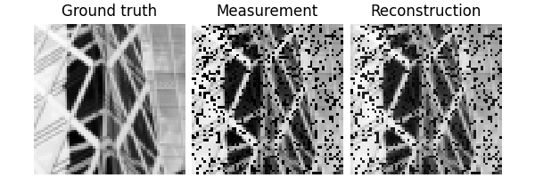
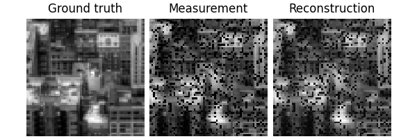
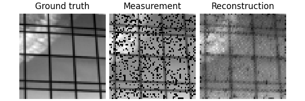
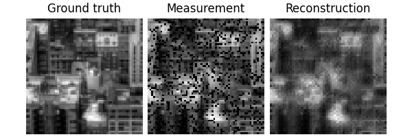
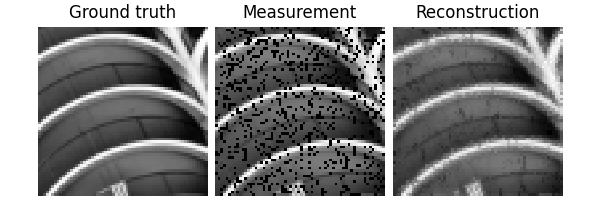
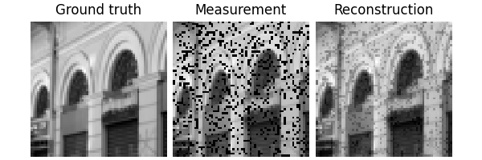
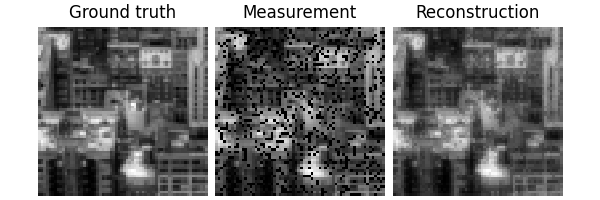
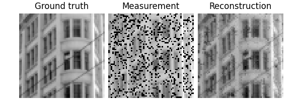
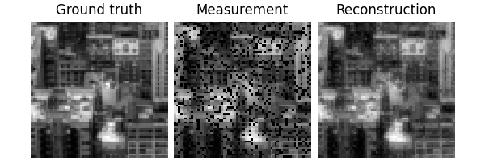
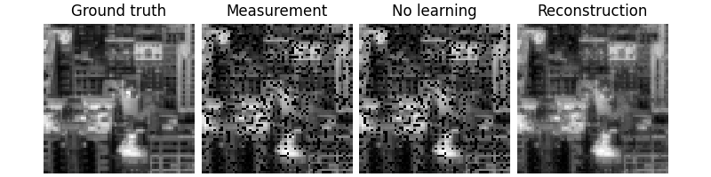

Note
New to DeepInverse? Get started with the basics with the 5 minute quickstart tutorial.
Training a reconstruction model#
This example provides a very simple quick start introduction to training reconstruction networks with DeepInverse for solving imaging inverse problems.
Training requires these components, all of which you can define with DeepInverse:
A
modelto be trained from reconstructors or define your own.A
physicsfrom our list of physics. Or, bring your own physics.A
datasetof images and/or measurements from datasets. Or, bring your own dataset.A
lossfrom our loss functions.A
metricfrom our metrics.
Here, we demonstrate a simple experiment of training a UNet on an inpainting task on the Urban100 dataset of natural images.
import deepinv as dinv
import torch
device = dinv.utils.get_freer_gpu() if torch.cuda.is_available() else "cpu"
rng = torch.Generator(device=device).manual_seed(0)
Setup#
First, define the physics that we want to train on.
Then define the dataset. Here we simulate a dataset of measurements from Urban100.
Tip
See datasets for types of datasets DeepInverse supports: e.g. paired, ground-truth-free, single-image…
from torchvision.transforms import Compose, ToTensor, Resize, CenterCrop, Grayscale
dataset = dinv.datasets.Urban100HR(
".",
download=True,
transform=Compose([ToTensor(), Grayscale(), Resize(256), CenterCrop(64)]),
)
train_dataset, test_dataset = torch.utils.data.random_split(
torch.utils.data.Subset(dataset, range(50)), (0.8, 0.2)
)
dataset_path = dinv.datasets.generate_dataset(
train_dataset=train_dataset,
test_dataset=test_dataset,
physics=physics,
device=device,
save_dir=".",
batch_size=1,
)
train_dataloader = torch.utils.data.DataLoader(
dinv.datasets.HDF5Dataset(dataset_path, train=True), shuffle=True
)
test_dataloader = torch.utils.data.DataLoader(
dinv.datasets.HDF5Dataset(dataset_path, train=False), shuffle=False
)
0%| | 0/135388067 [00:00<?, ?it/s]
19%|█▉ | 24.8M/129M [00:00<00:00, 259MB/s]
39%|███▊ | 49.9M/129M [00:00<00:00, 261MB/s]
65%|██████▍ | 83.5M/129M [00:00<00:00, 303MB/s]
90%|█████████ | 117M/129M [00:00<00:00, 320MB/s]
100%|██████████| 129M/129M [00:00<00:00, 310MB/s]
Extracting: 0%| | 0/101 [00:00<?, ?it/s]
Extracting: 21%|██ | 21/101 [00:00<00:00, 204.83it/s]
Extracting: 48%|████▊ | 48/101 [00:00<00:00, 240.38it/s]
Extracting: 72%|███████▏ | 73/101 [00:00<00:00, 223.49it/s]
Extracting: 95%|█████████▌| 96/101 [00:00<00:00, 219.87it/s]
Extracting: 100%|██████████| 101/101 [00:00<00:00, 223.07it/s]
Dataset has been successfully downloaded.
Dataset has been saved at ./dinv_dataset0.h5
Visualize a data sample:
x, y = next(iter(test_dataloader))
dinv.utils.plot({"Ground truth": x, "Measurement": y, "Mask": physics.mask})
For the model we use an artifact removal model, where \(\phi_{\theta}\) is a U-Net
model = dinv.models.ArtifactRemoval(
dinv.models.UNet(1, 1, scales=2, batch_norm=False).to(device)
)
Train the model#
We train the model using the deepinv.Trainer class,
which cleanly handles all steps for training.
We perform supervised learning and use the mean squared error as loss function. See losses for all supported state-of-the-art loss functions.
We evaluate using the PSNR metric. See metrics for all supported metrics.
Note
In this example, we only train for a few epochs to keep the training time short. For a good reconstruction quality, we recommend to train for at least 100 epochs.
trainer = dinv.Trainer(
model=model,
physics=physics,
optimizer=torch.optim.Adam(model.parameters(), lr=1e-3),
train_dataloader=train_dataloader,
eval_dataloader=test_dataloader,
epochs=5,
losses=dinv.loss.SupLoss(metric=dinv.metric.MSE()),
metrics=dinv.metric.PSNR(),
device=device,
plot_images=True,
show_progress_bar=False,
)
_ = trainer.train()
- 
- 
- 
- 
- 
- 
- 
- 
- 
The model has 443585 trainable parameters
Train epoch 0: TotalLoss=0.046, PSNR=14.033
Eval epoch 0: PSNR=15.107
Best model saved at epoch 1
Train epoch 1: TotalLoss=0.021, PSNR=18.133
Eval epoch 1: PSNR=21.417
Best model saved at epoch 2
Train epoch 2: TotalLoss=0.004, PSNR=24.788
Eval epoch 2: PSNR=25.873
Best model saved at epoch 3
Train epoch 3: TotalLoss=0.002, PSNR=26.871
Eval epoch 3: PSNR=27.101
Best model saved at epoch 4
Train epoch 4: TotalLoss=0.002, PSNR=26.818
Eval epoch 4: PSNR=27.779
Best model saved at epoch 5
Test the network#
We can now test the trained network using the deepinv.test() function.
The testing function will compute metrics and plot and save the results.
Eval epoch 0: PSNR=27.779, PSNR no learning=14.093
Test results:
PSNR no learning: 14.093 +- 2.596
PSNR: 27.779 +- 2.864
{'PSNR no learning': np.float64(14.092781066894531), 'PSNR no learning_std': np.float64(2.595893565256774), 'PSNR': np.float64(27.77861328125), 'PSNR_std': np.float64(2.8635661958930223)}
Total running time of the script: (0 minutes 17.554 seconds)